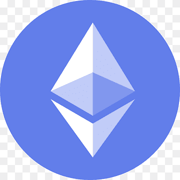

¿CÓMO SE VEN LAS CRYPTOMONEDAS?
BITCOIN

Ethereum

Una criptomoneda, criptodivisa (del inglés cryptocurrency) o criptoactivo es un medio digital de intercambio que utiliza criptografía fuerte para asegurar las transacciones, controlar la creación de unidades adicionales y verificar la transferencia de activos usando tecnologías de registro distribuido. Las criptomonedas son un tipo de divisa alternativa o moneda digital. Existe controversia respecto a que las criptomonedas tienen que ser de control descentralizado o monedas centralizadas por los bancos centrales u otra entidad, dejando a estas entidades y/o bancos centrales sin función ninguna. Podría darse el caso en que se adoptara masivamente y convertirse en moneda fiduciaria para todo el planeta. Las criptomonedas generalmente usan control descentralizado en lugar de una moneda digital de un banco central (CBDC).
El control de cada moneda funciona a través de una base de datos descentralizada, usualmente una cadena de bloques (en inglés blockchain), que sirve como una base de datos de transacciones financieras pública.
La primera criptomoneda que empezó a operar fue Bitcoin en 2009, y desde entonces han aparecido otras con diferentes características como Litecoin, Ethereum, BNB (Binance), Bitcoin Cash, Ripple o Dogecoin.